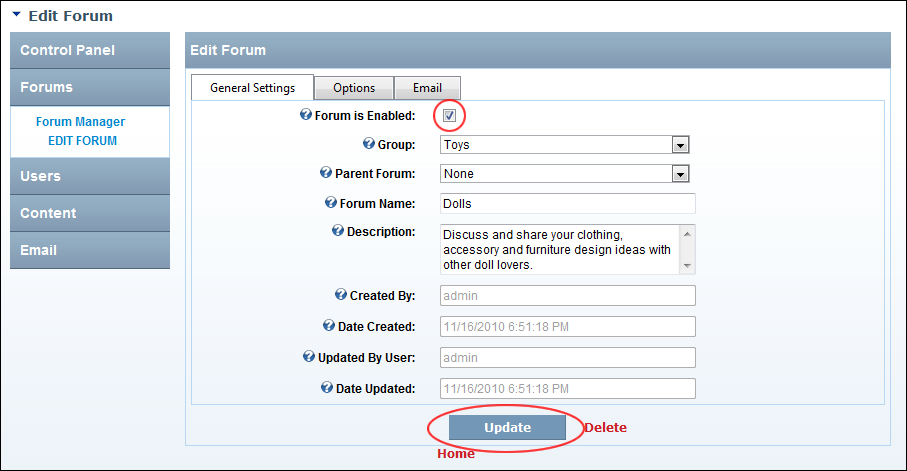

How to enable or disable a forum. Enabled forums are open for viewing to all those who can see it and posting for all those who are permitted to post to it. Disabled forums cannot be viewed and posted to. Note: An Enabled  or Disabled icon to the right of the forum name indicates its current enabled or disabled status.
or Disabled icon to the right of the forum name indicates its current enabled or disabled status.

Enabling or disabling a forum